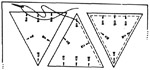
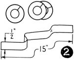
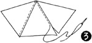
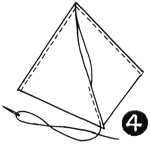
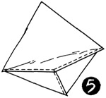
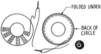
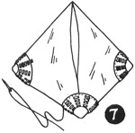
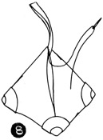
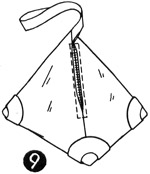
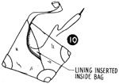

1952—How to Make Hats
by Ruby Carnahan
Beaded Velvet Bag to Match Beret
MARKING AND CUTTING
Lay bag pattern on crinoline and mark around pattern on crinoline. Make three sections like pattern. Pin crinoline pieces to sheet wadding and cut out. Lay sheet wadding and crinoline on wrong side of velvet, with sheet wadding next to the velvet. (Illus. 1) Baste sheet wadding and crinoline to the velvet and cut out.
(Illus. 2) Cut three pieces of bag beading pattern out of elastic net. Lap each piece and join, making three circles of elastic net. Cut a strip of elastic net 2" wide and 15" long.
SEWING
(Illus. 3) Baste two side seams together and stitch.
(Illus. 4) Then stitch third side up 2" from bottom.
(Illus. 5) Baste bottom seams together and stitch. Steam press seams open.
BEADING
(Illus. 6) Cover outside of elastic net circles with velvet and bead around circles, making four rows of beads.
Slip these circles over corner of bag and sew down to bag (Illus. 7).
HANDLE
(Illus. 8) Cover both sides of 15" strip of elastic net with velvet and insert at top opening of bag and sew to bag firmly.
ZIPPER
(Illus. 9) Insert a 6" zipper in opening in third side of bag.
LINING
Using bag pattern, cut lining in three pieces. Sew two side seams of lining and stitch third side up 2" from bottom. Place lining in bag.
(Illus. 10) Turn lining in along opening and hem around zipper.